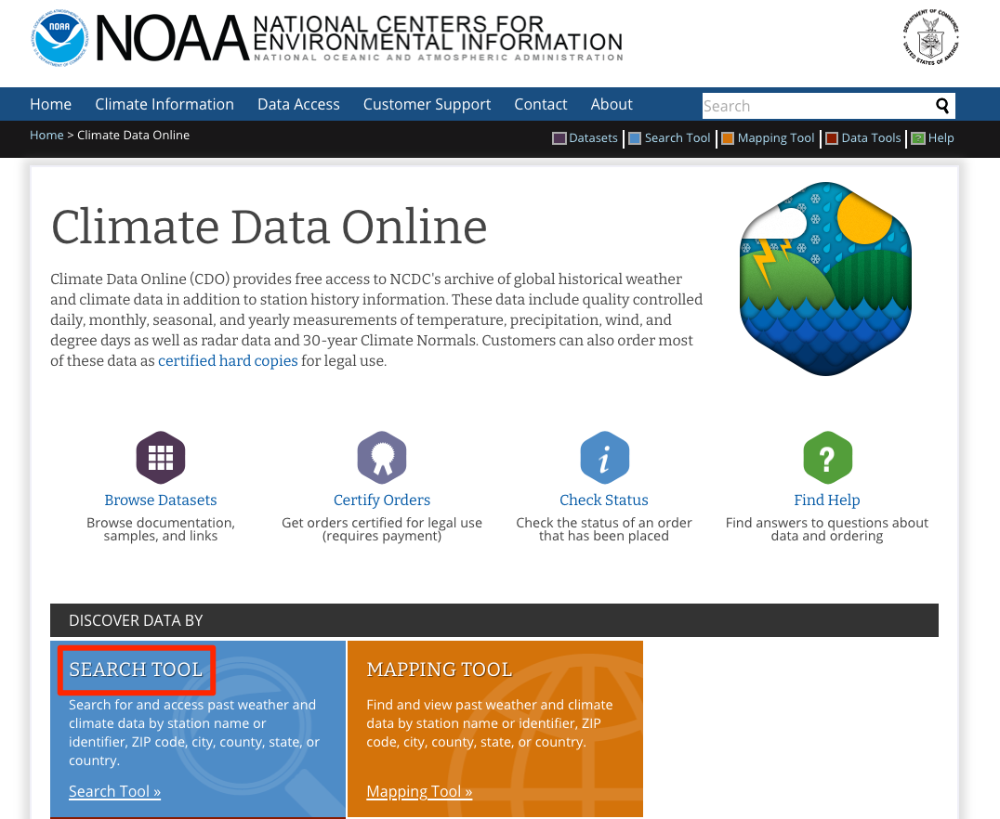
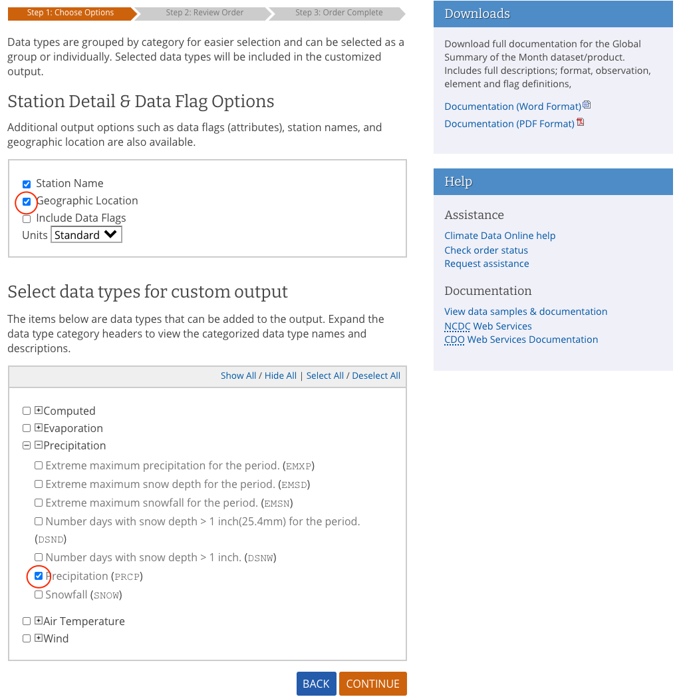
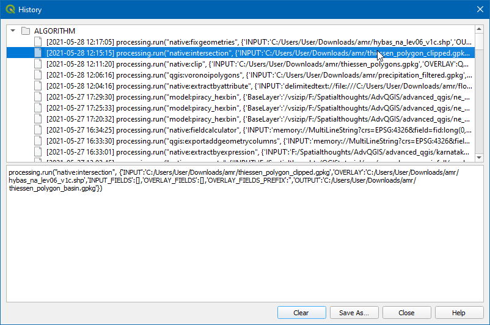

محاسبه منطقه ای میانگین بارش(QGIS3)¶
محاسبه بیلان آب، مدل سازی سیلاب، پیش بینی رواناب، مطالعات اقلیمی و غیره اغلب به عمق متوسط بارندگی در یک حوضه هیدرولوژیکی به عنوان ورودی نیاز دارد - که همچنین به نام بارش منطقه ای یا میانگین بارندگی (AMR) نامیده می شود.
محاسبه AMR را می توان با استفاده از داده های باران سنج انجام داد. با استفاده از محل بارش باران و بارش مشاهده شده، می توان با استفاده از هر یک از تکنیک های زیر، بارش متوسط را در یک مکان مشخص تخمین زد:
** میانگین ریاضی **: می توان به سادگی به طور متوسط از تمام مقادیر مشاهده شده استفاده کرد. این روش فرض می کند که میدان بارندگی همگن است و مشاهدات در باران نگارها مستقل است و وزن برابری به تمام سنجه های باران می دهد.
** چندضلعی تیسن Thiessen **: این روش منطقه را با استفاده از چند ضلعی Thiessen تقسیم می کند با این فرض که بارندگی در محدوده پوشش هر ایستگاه همگن است. این روش همچنین به طور متوسط میانگین وزن منطقه ای نامیده می شود. این مفروضات برای زمین های کم ارتفاع و یا مسطح خوب است، اما برای زمین های کوهستانی مناسب نیست.
** روش Iso-hyetal *: این تکنیک درونیابی خطوط هم تراز Isohyets - خطوط با بارش یکسان با محاسبه می کند. فرض بر این است که بارندگی بین دو خط تراز Isohyets همگن است. این روش زمانی مناسب است که شبکه باران سنجی متراکم است.
** فاصله وزنیWeighting / شبکه Gridded ** - این یک تکنیک درون یابی است که در آن یک شبکه شطرنجی ایجاد می شود و مقدار برای هر پیکسل بر اساس فاصله تا ایستگاه تخمین زده می شود. هنگامی که نقاط شبکه تخمین زده شده اند، جمع شده اند و مجموع با تعداد سلول های شبکه تقسیم می شود تا میانگین بارش منطقه ای را بدست آورد.
** روش های زمین آماری Geostatistic**: بارندگی به شدت تحت تأثیر عوامل محلی - مانند ارتفاع قرار دارد. با استفاده از تکنیک های رگرسیون چند متغیره یا تکنیک های کریگینگ، می توان ازخودهمبستگی مکانی حساب کرد و می تواند دقت بیشتری به دست آورد. این روش ها زمانی مناسب هستند که توزیع ایستگاه سنجنده باران یکنواخت و متراکم باشد.
در این آموزش، گردش کار QGIS برای محاسبه میانگین مساحتی با استفاده از روش Thiessen Polygon را یاد می گیریم.
بررسی اجمالی کار¶
در این آموزش، میزان بارندگی را که توسط ایستگاههای شبکه جهانی اقلیمشناسی تاریخی (GHCN) اندازهگیری میشود، میگیریم و میانگین بارندگی را در هر حوضه هیدرولوژیکی در ایالت فلوریدا محاسبه میکنیم.
مهارت های دیگری که یاد خواهید گرفت¶
نحوه حذف داده ها با مقادیر Null
نحوه اصلاح هندسه های نامعتبر در یک لایه
چگونه تاریخچه پردازش خود را بررسی کنید و ابزاری را با همان پارامترها دوباره اجرا کنید.
چگونه چند ضلعی ها را حل کنیم و آمار را خلاصه کنیم.
نحوه استفاده از تنها ویژگی های انتخاب شده در الگوریتم های پردازش
داده ها را دریافت کنید¶
ما از «دادههای آب و هوایی NOAA <https://www.ncdc.noaa.gov/cdo-web/>`_، «HydroSHEDS <https://www.hydrosheds.org/>» و «کارتوگرافی اداره سرشماری ایالات متحده» استفاده خواهیم کرد. لایه های داده مرزی <https://www.census.gov/geographies/mapping-files/time-series/geo/carto-boundary-file.html>`_.
بارش از نظر ایستگاهی¶
به وب سایت «NOAA Climate data <https://www.ncdc.noaa.gov/cdo-web/>`_ بروید. بر روی ابزار جستجو کلیک کنید.

"خلاصه جهانی ماه" را در :guilabel:"انتخاب نوع مشاهده آب و هوا/مجموعه داده" انتخاب کنید، سپس در :guilabel:"انتخاب محدوده تاریخ" جولای 2020 را انتخاب کنید، در :guilabel:"جستجو برای" را انتخاب کنید "States" "، در :guilabel:"یک عبارت جستجو را وارد کنید" تایپ کنید "فلوریدا". روی :guilabel:'Search' کلیک کنید.


به Custom Global Summary of the Month CSV بروید، روی :guilabel:`Continue کلیک کنید.

موقعیتهای جغرافیایی را بررسی کنید و در انتخاب انواع داده برای خروجی سفارشی`` بارش را گسترش دهید``` بارش (PRCP)`` را انتخاب کنید. روی :guilabel:'Continue' کلیک کنید.

آدرس ایمیل را وارد کنید و روی :guilabel:'SUBMIT ORDER' کلیک کنید تا داده ها را دانلود کنید.

حوضه های هیدرولوژیکی¶
به "وب سایت HydroSHEDS <https://www.hydrosheds.org/>"_ بروید و روی :guilabel:"دانلود" کلیک کنید.

انتخاب کنید:menuselection:HydroBASINS --> استاندارد --> آمریکای شمالی و کارائیب --> hybas_na_lev06_v1c.zip

آدرس ایمیل را وارد کنید و روی :guilabel:'Submit Request' کلیک کنید تا داده ها را دانلود کنید.

مرزهای ایالتی¶
از صفحه <https://www.census.gov/geographies/mapping-files/time-series/geo/carto-boundary-file.html>`_ فایل های مرزی نقشه برداری - Shapefile دیدن کنید. فایل cb_2018_us_state_500k.zip را از بخش States دانلود کنید.
برای راحتی کار، میتوانید مستقیماً یک نسخه از مجموعه دادهها را از لینکهای زیر دانلود کنید:
florida_2020_07_prcp <https://www.qgistutorials.com/downloads/florida_2020_07_prcp.csv>`_
cb_2018_us_state_500k <https://www.qgistutorials.com/downloads/cb_2018_us_state_500k.zip>`_
منابع داده: [GHCN]، [HYDROSHEDS]، [USCENSUS]
روش¶
QGIS را باز کرده و روی :guilabel:`Open Data Source Manager کلیک کنید.
در کادر محاوره ای Data Source Manager به :guilabel:`Text محدود شده تغییر دهید. روی "..."" در :guilabel:"نام فایل" کلیک کنید، سپس فایل "florida_2020_07_prcp.csv" را مرور کرده و انتخاب کنید.

اکنون، در زیر Geometry Definition مختصات نقطه، فیلد X و فیلد Y باید به ترتیب طول جغرافیایی و طول جغرافیایی باشند را انتخاب کنید. . Geometry CRS را به عنوان :guilabel:`EPSG 4326 - WGS 84 انتخاب کنید. روی :guilabel:'Add' کلیک کنید.

اکنون یک لایه نقطه جدید اضافه می شود، روی نماد :guilabel:'Open Attribute Table' کلیک کنید.

در جدول Attribute فیلد PRCP نشان دهنده میزان بارندگی در ایستگاه در طول ژوئیه 2020 است. همچنین این داده ها بر حسب اینچ ثبت شده است. توجه داشته باشید که مقادیر «تهی» کمی وجود دارد که می تواند در حین محاسبه مشکل ایجاد کند. ستون PRCP را مرتب کنید، و خواهید دید که تنها بخش کوچکی از مجموعه داده Null است. اکنون ایستگاه های با مقادیر Null را حذف می کنیم.

جعبه ابزار پردازش را با رفتن به باز کنید و الگوریتم algorithm را جستجو کرده و مکان یابی کنید.
در کادر محاوره ای Extract by Attribute, :guilabel:`Input Layer را به عنوان
florida_2020_07_prcpانتخاب کنید، سپس در خصیصه انتخابی، ``PRCP` را انتخاب کنید، سپس```null`` در اپراتور. روی "…"" در کنار :guilabel:"Extracted (ویژگی)" کلیک کنید، :guilabel:"Save to File..." را انتخاب کنید، نام لایه را به عنوان "precipitation_filtered.gpkg" وارد کنید و روی :guilabel کلیک کنید: "دویدن".

حالا یک لایه جدید به canvas اضافه می شود، لایه قدیمی را خاموش کنید و می بینید که ایستگاه های با مقادیر Null حذف شده اند.

اکنون چند ضلعی های thiessen را از این لایه تولید می کنیم. جعبه ابزار پردازش را با رفتن به باز کنید و الگوریتم را جستجو و مکان یابی کنید.

توجه
چند ضلعی های تیسن نشان دهنده ناحیه نفوذ در اطراف هر نقطه است. هر چند ضلعی ناحیه ای را مشخص می کند که نسبت به هر ایستگاه دیگری به یک ایستگاه خاص نزدیکتر است. این بدان معنی است که بارش در هر نقطه با نزدیکترین ایستگاه یکسان فرض می شود.
''recipitation_filtered'' را به عنوان :guilabel:'لایه ورودی' انتخاب کنید. از آنجایی که ما داده ای برای هیچ ایستگاه باران سنج خارج از مرز حوضه نداریم، می توانیم مقداری ناحیه بافر اضافه کنیم. "15" را به عنوان :guilabel:"منطقه بافر (% وسعت)" وارد کنید. روی "..."" در :guilabel:"Polygons Voronoi" کلیک کنید و :guilabel:"Save to File..." را انتخاب کنید، سپس نام را به عنوان "thiessen_polygons.gpkg" وارد کنید. روی Run کلیک کنید.

یک لایه جدید "thiessen_polygons" به بوم اضافه خواهد شد. بیایید این لایه را روی مرز حالت کلیپ کنیم. فایل
cb_2018_us_state_500k.shpرا در Browser جستجو کنید و آن را روی بوم بکشید.

لایه حالت ها در یک CRS متفاوت از Project CRS است. شما یک درخواست با گزینه های مختلف برای تبدیل این CRS به پروژه CRS دریافت خواهید کرد. در کادر گفتگوی Select Transformation می توانید تبدیل پیش فرض را انتخاب کرده و روی OK کلیک کنید.

اکنون لایه «چند ضلعی های تیسن» را روی مرز ایالت فلوریدا گیره می دهیم. روی نماد Select Feature by area یا Single Click کلیک کنید و روی ایالت فلوریدا کلیک کنید.

جعبه ابزار پردازش را با رفتن به باز کنید و الگوریتم را جستجو و مکان یابی کنید.
در کادر محاوره ای Clip، لایه ورودی را به عنوان "thiessen_polygons" انتخاب کنید، در :guilabel:"لایه Overlay" لایه "cb_2018_us_state_500K" را انتخاب کنید و :guilabel را علامت بزنید: کادر انتخاب «فقط ویژگیهای انتخابشده»، سپس روی «…»» در :guilabel: «Clipped» کلیک کنید و :guilabel: «Save to File…» را انتخاب کنید، سپس نام را بهعنوان «thiessen_polygons_clipped.gpkg» وارد کنید. روی Run کلیک کنید.

لایه چند ضلعی های بریده شده «thiessen_polygons_clipped» به بوم اضافه می شود. قابلیت دید همه لایه های دیگر را خاموش کنید. از آنجایی که وظیفه ما محاسبه میانگین بارندگی در هر حوضه است، اکنون چند ضلعی های نشان دهنده حوضه ها را بارگذاری می کنیم. لایه
hybas_na_lev06_v1c.shpرا از Browser پیدا کنید و آن را به بوم اضافه کنید.

متوجه خواهید شد که هر حوضه توسط چند ضلعی های تیسن پوشیده شده است و هر چند ضلعی حوضه های متعددی را در بر می گیرد. برای تجسم این نماد :guilabel:` پانل استایل لایه باز` و Opacity را به
75%تغییر دهید. اکنون هر دو لایه را قطع می کنیم تا چند ضلعی های تیسن را تا مرز هر حوضه برش دهیم.

جعبه ابزار پردازش را با رفتن به باز کنید و الگوریتم را جستجو و مکان یابی کنید.

در کادر محاوره ای تقاطع، لایه ورودی را به عنوان
thiessen_polygons_clippedو لایه روکش را به عنوانhybas_na_lev06_v1cانتخاب کنید، سپس بر روی "..." کلیک کنید. در :guilabel:'Intersected' و :guilabel:'Save to File…' را انتخاب کنید، سپس نام را به عنوان "thiessen_polygons_basin.gpkg" وارد کنید. روی Run کلیک کنید.

اجرا با یک پیغام خطا ناموفق خواهد بود * هندسه نامعتبر دارد. لطفاً هندسه را اصلاح کنید یا تنظیمات پردازش را به گزینه "نادیده گرفتن ویژگی های ورودی نامعتبر" تغییر دهید.*. در آموزش Handling Invalid Geometries (QGIS3) می توانید در مورد این خطا اطلاعات بیشتری کسب کنید.

برای اصلاح هندسه ها، جعبه ابزار پردازش را با رفتن به باز کنید و الگوریتم :menuselection:` هندسه برداری --> فیکس هندسه را جستجو و مکان یابی کنید.

در کادر محاوره ای Fix Geometries Input layer را به عنوان
hybas_na_lev06_v1cانتخاب کنید و روی…در Fixed geometries کلیک کنید و Save to را انتخاب کنید. File…، نام فایل را به صورتhybas_na_lev06_v1c_fixed.gpkgوارد کنید و روی Run کلیک کنید.

اکنون یک لایه جدید به بوم اضافه می شود. اکنون می توانیم تقاطع را دوباره امتحان کنیم. به جای اینکه ابزار را از ابتدا اجرا کنیم و تمام پارامترها را پر کنیم، میتوانیم گفتگوی از پیش پر شده را از Processing History بازیابی کنیم و فقط لایه Overlay را تغییر دهیم. روی :menuselection:'Processing --> History' کلیک کنید.

روی الگوریتم native:intersection از لیست دوبار کلیک کنید.

Change the Overlay layer to
hybas_na_lev06_v1c_fixedand click Run.

اکنون یک لایه جدید بارگذاری میشود و میتوانید ببینید که "thiessen_polygons_basin" بر اساس مرز حوضه بریده شده است.

حال، بیایید مقدار میانگین بارندگی را از چند ضلعی های تیسن برای هر حوضه محاسبه کنیم. این کار با استفاده از ابزار Aggregate انجام می شود که به ما امکان می دهد چند ضلعی های جداگانه را در حین محاسبه آمار مربوط به مقادیر ویژگی ها حل کنیم. اکنون جعبه ابزار پردازش را با رفتن به باز کنید و الگوریتم :menuselection:'Vector geometry --> Aggregate' را جستجو و مکان یابی کنید.

در کادر محاوره ای Aggregate لایه ورودی را به عنوان
thiessen_polygons_basinانتخاب کنید، همه فیلدها به جزPRCPوHYBAS_IDرا انتخاب کنید و روی :guilabel:`Delete Selected Field کلیک کنید. .

در :guilabel:"گروه بر اساس عبارت" "HYBAS_ID" را انتخاب کنید. این به این معنی است که ابزار همه چند ضلعی هایی را که مقدار "HYBAS_ID" یکسانی دارند حل می کند. در مورد ما، اینها همه چند ضلعی های thiessen هستند که در یک حوضه سقوط می کنند. در بخش Aggregates، میتوانیم نحوه جمعآوری مقادیر مختلف فیلد از همه چند ضلعیهایی را که منحل میشوند، پیکربندی کنیم. برای :guilabel:`PRCP روی دکمه expression کلیک کنید تا عبارت زیر را وارد کنید. عبارت، کسر مساحتی را برای هر چند ضلعی محاسبه می کند. :guilabel:'Aggregate Function' را روی ``sum` تنظیم کنید، که تمام کسرهای مساحت وزن را جمع آوری می کند که منجر به میانگین وزنی مساحت می شود. برای HYBAS_ID، تابع Aggregate را به ``first_value` تغییر دهید. از آنجایی که ما همه چند ضلعی های thiessen را بر اساس HYBAS_ID گروه بندی می کنیم، همه مقادیر یکسان خواهند بود و تابع first_value از مقدار مشخصه اولین چند ضلعی در هر حوضه استفاده می کند. روی "..."" در :guilabel:"Aggregated" کلیک کنید و :guilabel:"Save to File..." را انتخاب کنید، نام فایل را به عنوان "areal_mean_rainfall.gpkg" وارد کنید و روی :guilabel:"Run" کلیک کنید.
(PRCP * $area) / sum($area)
یک لایه جدید به بوم اضافه خواهد شد، اجازه دهید جدول ویژگی را برای کاوش باز کنیم. روی نماد :guilabel:'Open Attribute Table' کلیک کنید.

فیلد PRCP حاوی میانگین بارندگی منطقه ای برای هر حوضه بر حسب اینچ است.

If you want to give feedback or share your experience with this tutorial, please comment below. (requires GitHub account)